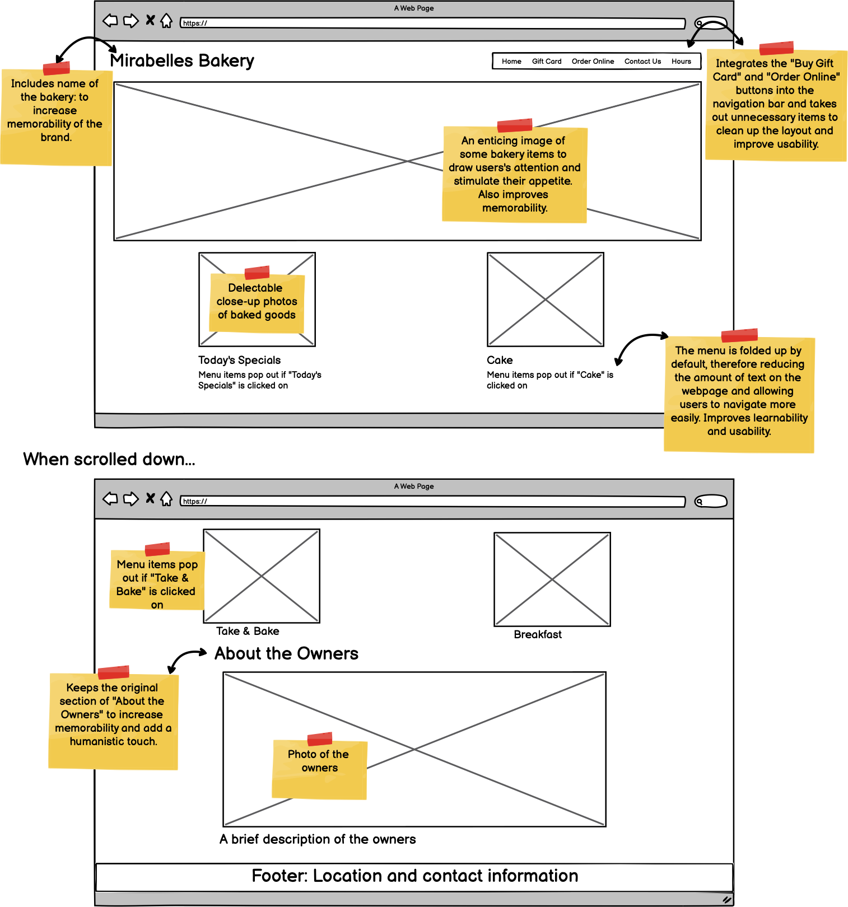
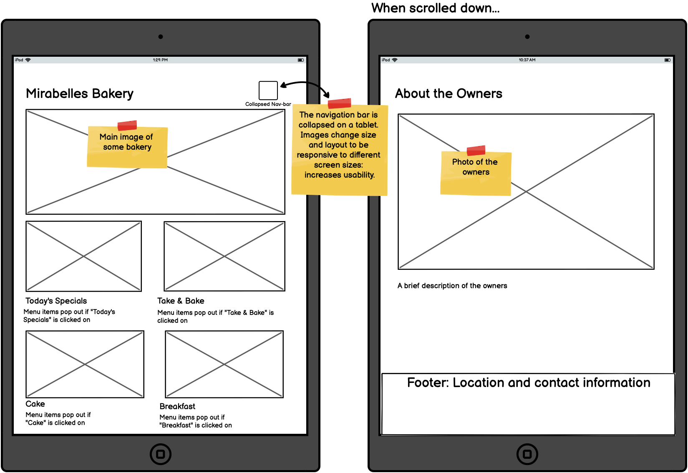

Low-fidelity Wireframing
As a first step, I created the following 3 low-fidelity wireframes, one for each of the screen sizes: desktop, tablet, and mobile. Since the original webpage is the homepage of the bakery, I decided to remove the long menus and refurnish it with more eye-catching images. The menus can be made accessible through links beneath the images and will not be a major component of the homepage.

